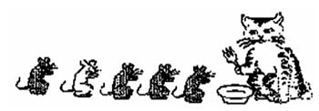
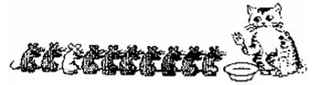
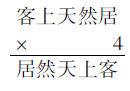
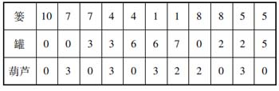
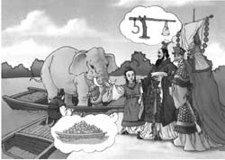
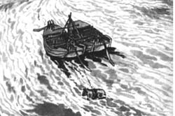

莱蒙托夫是俄罗斯伟大的诗人。他爱好美术，曾画过一幅肖像，画的是他在梦里见到的一位数学家。
诗人不仅爱好画画，还喜欢数学。他身边经常带着数学书，有空就拿出来看，还喜欢和朋友们玩数学游戏。一天晚上，他又被一道有趣的数学题吸引住了，可想了许久还得不到答案，感到有点疲倦了。这时，房门突然被推开，走进一位学者打扮的人来。
“你好啊，莱蒙托夫！”
诗人揉了揉眼睛。多面熟啊，好像在哪儿见过。
“在干啥？又写诗吗？”那人拖过一张椅子，在桌旁坐了下来。
“做一道数学题。”莱蒙托夫回答。
“唷，和我是同行啰！”那人幽默地笑了笑，就跟莱蒙托夫一道研究起题目来。他一面画图，一面解释。
“这不解决了么！”那人放下了笔，两人相对大笑。
莱蒙托夫笑得真痛快。这一阵笑使他醒了过来，原来做了个梦。他深沉地回味着刚才的梦境，回想着那位面熟的数学家。他急忙地取出了画纸，把这位梦中的数学家画了下来。这幅肖像至今还收藏在俄罗斯科学院的普希金馆里。
这位梦里的数学家到底是谁呢？人们说，从形象看，很像对数的创始人约翰·纳泊尔。
约翰·纳泊尔（1550~1617）早于莱蒙托夫200年左右，他是苏格兰数学家。在他生活的年代，天文学的研究要碰到大量的繁琐的运算，花费了天文学家大量的精力和时间。因而，简化大数的乘、除、乘方和开方的运算，就成为当时迫切需要解决的问题。这就是约翰·纳泊尔发明对数的动机。
乘方、开方比乘法、除法麻烦，乘法、除法又比加法、减法麻烦。对数的发明，使乘方、开方三级运算可以转化为乘、除二级运算，乘、除二级运算转化为加、减一级运算，从而使较繁的计算转化为较简单的计算。法国著名数学家拉普拉斯说过：“对数算法使得原来需要好几个月劳力才能完成的计算，缩短为很少的几天，它不仅可以避免冗长的计算与可能产生的误差，而且实际上使得天文学家的生命延长了好多倍。”
莱蒙托夫和纳泊尔不是同时代的人，他们不可能见过面。但是，由于对数产生的时代影响很深，加之莱蒙托夫完全有可能看过纳泊尔的著作，而且有可能在这些书中看到过纳泊尔的肖像。所以在研究数学题入了迷的时候，纳泊尔就闯进了莱蒙托夫的梦境里来了。
有一个人，干起工作来很认真，技术又好，不过有个缺点，喝起酒来一醉方休。喝醉了酒，不是骂人，就是打架。亲戚朋友都劝他少喝酒，甚至不喝，却总是改不了。
一天，这位爱喝酒的朋友收到一封信。拆开一看，信纸上写的全是数字：
9 9
8179 7954
76229 8406 9405
769 18934
1.291817
奇怪呀，这么多数字，什么意思？怎么一点点文字说明都没有呢？
是账单？是银行存款单的账号和金额？是密码？是朋友开玩笑，还是坏蛋恐吓敲诈？越想越紧张，越想越害怕，赶紧找对门数学老师帮助看看。
数学老师把信仔细看了几遍，问道：“你的小外甥爱不爱看电视？”
“怎么不爱看，经常学电视里说话，南腔北调，一说一大套。一会儿称我舅舅，一会儿喊我动动腰。”
“要你活动活动腰部？”
“哪里，外甥封我做001号警长啦！他说电视里面的警察手拿对讲机，想找代号01的人，就喊‘动腰动腰’；想找02，就喊‘动两动两’。见了我001，就喊‘动动腰’啦。”
数学老师微微一笑，说：“这就对了。打电话怕数字听错，0读成‘洞’，1读成‘幺’，2读成‘两’。这封信是你那满口南腔北调的好外甥写的，我读出来你听听。”
这封全是数字的信，读起来，原来是这样的：
舅 舅
不要吃酒 吃酒误事
吃了二两酒 不是动怒 就是动武
吃了酒 要被酒杀死
一点儿酒也不要吃舅舅听了，脸红到耳根，连声说道：“不吃！不吃！”
从前，有两位要好朋友，一位是喜欢吟诗的厨师，一位是爱好数学的诗人。
这一天，厨师到诗人家里串门。诗人拿出两个鸡蛋，说：“交给你啦，做一桌菜，看你的杰作！”
厨师答道：“没问题，还要配诗一首！”
诗人拿了两双筷子放在桌上，自己先坐下来。
一会儿，厨师端上来一只小碟子，里面装的是两只煮熟的蛋黄，一面走一面高声朗诵：
两个黄鹂鸣翠柳，
放下这碟“黄鹂”，转身又进厨房拿出一只盘子，里面是用蛋白切成丝，排列得像一行飞鸟。厨师把这盘菜放到诗人面前，用手指指，说：
一行白鹭上青天。
第三次从厨房里端出来的，是一碟凉拌蛋衣。这是把蛋壳和蛋白之间的一层很薄的皮小心揭下来，剪成碎末，雪片似地洒在碟子里，上面又洒了些精盐。这碟小菜配的诗句是：
窗含西岭千秋雪，
最后，厨师又端出一碗汤，汤面上浮着些蛋壳做的小船。伴随着蛋壳船在汤面上的晃动，厨师吟道：
门泊东吴万里船。
就这样，一桌三菜一汤的鸡蛋宴，正好配了一首家喻户晓的唐诗，这是唐代大诗人杜甫住在成都草堂时著的《绝句》。
厨师显过了本领，诗人的兴致上来了。
诗人说：这首诗为什么特别优美动人？不但因为它情景交融，而且因为诗中有数学帮忙，把景物数量化，显得更投入，更动情。你看，“两个黄鹂”，这里有数字2；“一行白鹭”，这里有数字1；“西岭千秋雪”用到了数1000；“东吴万里船”运用了数10000。每一句都离不开数。
诗人又说，先别忙动筷子，请你做一道数学小问题。用刚才杜甫诗句里的四个数2、1、1000和10000，再连同我们这桌菜的原料，两个鸡蛋，算是两个0，添加适当的数学符号，组成一个等式。怎么样？
厨师把几样菜看了又看，说：这可能吗？你写写看！
诗人立刻写出一道算式：
10×1000+2×0=10000。
厨师拿起筷子，说，我也有了：
（20-10）×1000=10000。
这就是关于唐诗鸡蛋宴外加数字游戏的故事。
下面一副对联，说的是两位人人钦佩个个敬仰的英雄豪杰。用不着说出名和姓，只要一看内容，就知道他们是谁。对联写道：
取二川，排八阵，六出七擒，五丈原前，点四十九盏明灯，一心只为酬三顾。
抱孤子，出重围，匹马单枪，长坂桥边，战数百千员上将，独我犹能保两全。
讲的是谁呢？
答案：上联是诸葛亮，下联是赵云。
为什么这么说呢？
上联这“三顾”，是说刘备三顾茅庐，恭恭敬敬请诸葛亮走出家门，帮助他平战乱、打天下。“排八阵”，是说诸葛亮摆下八阵图，把东吴大将陆逊困在里面出不来。“七擒”，是说诸葛亮为了平定南方，七擒孟获，捉住了放掉，再捉住再放掉，直到对手口服心服，老老实实投降。“取二川”，是说诸葛亮辅助刘备取得川东、川西。“六出”，是说诸葛亮不辞劳苦，从四川发兵，六出祁山，多次同魏较量，看谁能统一大好河山。“五丈原前，点四十九盏明灯”，是说诸葛亮积劳成疾，最后一次出兵与魏军作战期间，病得快要不行了，不甘心“壮志未酬身先逝”，只好搞点儿迷信活动，在军队驻地五丈原点了四十九盏明灯，向老天借寿，没有成功。上联里说了这么多事情，每件都能对上号，除去诸葛亮，还能是谁？
那么下联又怎么说的是赵云呢？
这要抓特征。下联里不是说到长坂桥吗？谁在长坂桥打仗显威风？那是赵云。赵云在曹操大军包围圈里杀来杀去，找到刘备的妻子糜夫人和儿子阿斗，糜夫人把阿斗托付给赵云，然后跳井自杀，阿斗成了孤儿。赵云把阿斗抱护在怀里，单枪匹马，冲出重重包围，杀死曹营许多大将，自己和阿斗却都没有受伤，正像京剧里唱的，“长坂坡，救阿斗，杀得曹兵个个愁”。整个下联就是讲赵云百万军中救阿斗的故事。
这副对联，用字不多，内容却很丰富，非常生动，读起来特别带劲。这是什么原因呢？
是因为作者下了功夫，在对联里嵌进许多数字，讲事情高度浓缩，读起来朗朗上口。
你看，在上联里，数词一、二、三、四、五、六、七、八、九、十全部出动，一个不少。在下联里为了避免重复，变着花样对上同样多的数词，例如孤子、匹马、单枪、独我都暗含数字1；重围中的“重”字是说许多层，数百千中的“数”字就是若干，“许多”和“若干”也是数词，只不过数目不确定，带有模糊色彩。现代人不是也很喜欢用数字吗？“十佳”呀，“百强”呀，一大套一大套的，说起来顺畅，听起来舒服，记起来容易。现在就连学生复习迎考，也会自己归纳出这里几条、那里几点的，办法管用得很。
说起现在，就让我们按照现在数学里的习惯，改用阿拉伯数字，把上联中的一连串数目按照出场先后顺序，依次写成一行：
2 8 6 7 5 4 9 1 3
能不能在这些数字之间添加适当的数学符号，组成一道等式呢？
答案是肯定的，看看下面的式子：
（2×8×6+7-5）÷49+1=3。
故事里面有数学，数学里面有故事，妙哉！
小花猫捉到5只老鼠。它命令老鼠们排成一队后一二报数，吃掉所有一数的老鼠。剩下的老鼠进行第二轮二报数，吃掉所有一数的老鼠。最后剩下一只小白鼠。

小花猫又捉到9只老鼠，连同上次吃剩下来的小白鼠，共计10只。它还是命令这些老鼠排成一队，然后按照“一二报数，吃掉一数”的老办法，进行三轮，最后还是剩下这只小白鼠。
猫觉得很奇怪，问道：“怎么还是你？”
小白鼠回答说：“我计算过，剩下的一定是我。”

猫又问：“上次你排第四位，这次排第八位，位置都是算出来的吗？”
小白鼠说，“是的。我的办法是：乘2、乘2、再乘2，一直乘到不能再乘，如果再乘，就要超过队伍长度，这时就不乘了。第一次5只老鼠，利用2×2=4，排在第四个位置。第二次10只老鼠，利用2×2×2=8，排在第八个位置。下次如果有20只老鼠，就排在第十六个位置了。”
这时正好猫的主人从屋里走出来，一眼就看见小白鼠，忙说：“这不是实验室里丢失的小白鼠吗？你偷跑出来，和猫一起玩，多危险！”
就这样，小白鼠死里逃生，被主人带回了实验室。
有一个破案的小故事，与法国数学家伽罗瓦有关。伽罗瓦（Galois，1811~1832）虽然只活了21岁，却对方程的理论作出了杰出的贡献。
据说伽罗瓦的一位老朋友鲁柏突然被人刺死，家里的巨款也被洗劫一空。女看门人告诉伽罗瓦，警察勘察现场时，看见鲁柏手里紧紧捏着半块没有吃完的苹果馅饼，不知是为了什么。她认为，凶手可能就在这所公寓里面，因为出事前后她一直在值班室，没有看见有人进入公寓。但是这所公寓有4层楼，每层有15个房间，居住着100多人，情况复杂，作案人究竟是谁呢？
伽罗瓦经过考虑，请女看门人带他到三楼，在314号房间的门前停下来，问道：“这房间谁住过？”
女看门人回答：“米塞尔。”
“这个人怎么样？”
“爱赌钱，好喝酒，昨天搬走了。”
“这个米塞尔就是杀人凶手。”伽罗瓦肯定地说。
女看门人大为惊奇，问道：“根据什么？”
伽罗瓦告诉她，根据受害人手里的馅饼。因为在英文里，“馅饼”叫做pie，读音和希腊字母π相同，而字母π经常用来表示圆周率。鲁柏生前爱好数学，常把圆周率的近似值取成3.14来做计算。鲁柏在最后时刻紧握馅饼，看来是为了强调314这个数，提醒人们注意314号房间里的居民米塞尔。联系米塞尔的表现，可以断定，凶手就是他！
半块馅饼虽小，却能提供重要线索，帮助侦破大案。做数学题的时候，如果解不下去，不妨回过头来，重新仔细看看题目，也许有“馅饼”之类的蛛丝马迹，通过联想，能够发现解题的关键。
北京有一家餐馆，店号“天然居”，里面有一副著名对联：
客上天然居，
居然天上客。
顾客进了天然居餐馆，看见这副对联，说自己居然如同天上的客人，虽然还没有进餐，就已经觉得是一种享受。
这副对联，不但意境好，文字更显得精巧。把上联“客上天然居”倒过来读，刚好变成下联“居然天上客”。如果把整个一副对联倒过来读，结果还是原联不变。
这种既能正读、又能倒读的文字，叫做回文。用回文写成的对联，叫做回文对联，又叫“卷帘联”，就像现在人家的百页窗帘一样，既能从上往下顺放，又能从下往上倒卷。
据说清代的乾隆皇帝把天然居这副回文对联两句并成一句，作为新的上联：
客上天然居，居然天上客。
出对容易对对难，对出回文对联更难。以一副回文对联为上联，要能对出下联，可谓难上加难。倒要看看，有谁能对出下联来呢？
乾隆皇帝手下有一位大臣，名叫纪昀（“昀”字读“yún”），居然把下联对出来了：
人过大佛寺，寺佛大过人。
可不是吗，人们走过大佛寺，都会议论说，那寺庙里的佛像，大得超过了真的人呢！
与回文对联有关的数学题，自然也很有趣。下面是用回文对联编成的一道算式谜：

在上面的乘法算式里，每个汉字代表一个数字，不同的汉字代表不同的数字。把这道算式还原出来，是什么样子呢？
这道题只有唯一的答案：
21978×4=87912
这个答案怎么出来的？
猜出来？凑出来？都不是。可能情形太多，猜不出，凑不来，只有靠用数学知识把它算出来。其实用到的知识不多，计算也很简单。
因为乘数4是偶数，所以乘积的末位数字“客”是偶数。
“客”又是被乘数的首位数字，5位的被乘数乘以4，还得到5位数，可见首位数字“客”小于3，因而只能是：
客=2。
再从个位相乘，得到：
居=8。
这样一来，做乘法时，千位没有向万位上进位，所以被乘数的千位数字“上”也小于3。它又不能和万位一样等于2，只能是0或1。
再考虑十位相乘。积的十位数字“上”等于一个偶数加上从个位进来的3，一定是奇数，因而得到：
上=1。
进而由此顺次推出：
然=7，天=9。
这样就把五个数字全都求出来了。
从前，有一位农民，带着一条狗、一只兔子和一棵大白菜，来到河边，想要乘船到对岸去。他的小船太破旧，如果把狗、兔子和菜一次全部带上船，就超重了，可能沉船。每次只能带这三件东西里的一件上船。可是，如果离开了农民的照料，狗要咬兔子，兔子要啃白菜。这位农民能不能利用他的小船，把狗、兔子和菜一件一件地运过河去，并且保持平安无事呢？
狗和兔在一起时不能没有人维持秩序，兔子和菜在一起时不能没有人保护白菜。狗和白菜可以和平共处，因为白菜不能引起狗的食欲。
解决办法的要点是：先把兔子送过河；回来后，再把狗送过河，把兔子随船带回来；然后再把白菜送过河；再回来一趟，最后把兔子带过河去。
在这个过河问题的条件中，只说到狗和兔不能留在一起，兔和菜不能留在一起，说的都是消极因素。通过分析，发现狗和菜可以留在一起，找出了隐含的积极因素，从而使问题得到解决。
有些问题直接告诉你的条件很少，难以下手，如果能挖掘出有用的隐含条件，就可以化难为易了。
韩信是中国古代一位有名的大元帅，辅助刘邦打败楚霸王项羽，奠定了汉朝的基业。民间流传着一些以韩信为主角的有关聪明人的故事，下面就是其中的一个。
据说有一天，韩信骑马走在路上，看见两个人正在路边为分油发愁。这两个人有一只容量10斤（1斤=500克）的篓子，里面装满了油；还有一只空的罐和一只空的葫芦，罐可装7斤油，葫芦可装3斤油。要把这10斤油平分，每人5斤。但是谁也没有带秤，只能拿手头的三个容器倒来倒去。应该怎样分呢？
韩信骑在马上，了解情况以后，说：“葫芦归罐罐归篓，二人分油回家走。”说完了，打马就走。两个人按照韩信的办法倒来倒去，果然把油平均分成两半，每人5斤，高高兴兴，各自回家。
究竟是怎样倒来倒去的呢？三种容器各自装油斤数的变化过程，可从下面的表中看出。

韩信所说的“葫芦归罐”，是指把葫芦里的油往罐里倒；“罐归篓”是指把罐里的油往篓里倒。通常分油要把油从大容器往小容器里倒，现在却把小容器里的油往大容器里“归”。往油葫芦里倒油，只能得到3斤的油量；把葫芦里的油往罐里“归”，“归”到第三次，葫芦里就出现2斤的油量。再把满满一罐油“归”到篓里，腾出空来，把葫芦里的2斤油“归”到空罐里；最后再倒一葫芦3斤油，“归”到罐里，就完成分油任务了。
东汉末年（公元2世纪末3世纪初）我国处于军阀混战之中。曹操割据了北方，孙权割据了长江流域及南方，刘备割据了四川一带，开始了三国时期。
曹操有一个小儿子名叫曹冲，他不仅外表长得美，而且自小聪明异常，“五、六岁，智意所及，有若成人”，所以曹操非常喜爱他。
有一年，孙权送给曹操一头大象，派人用船由水路运到京城。这件事轰动了全城，人们纷纷跑到河边去看象。曹操也非常高兴，连忙带了家属和满朝文武大臣赶到河边去看大象。因为象在当时的北方是十分珍贵的，它象征着吉祥、如意和富贵。

河边围着许多老百姓，送象来的人正在为大象洗澡。曹操到了，得意地坐在一旁观看，大臣们见曹操很高兴，纷纷上前为曹操歌功颂德。人们一边看，一边议论大象的重量，有的说：“起码有五百斤。”又有人说：“哪止五百斤，至少一千斤。”还有的说：“一千斤恐怕不到，可八九百斤是足足有的。”曹操听了这些议论，很想知道大象的确切重量，站起来问：“这象到底有多重？谁知道快说给我听！”文武大臣都摇摇头说不出大象到底有多重。曹操派人去问护送象的人，他们也说不知道，曹操又问：“谁有办法称出这头大象的重量？”大臣们你看我，我看你，轻声议论，有的说：“哪来这么大的秤？”因为当时没有像现在那样大的磅秤。有的说：“快砍一棵大树，做一杆大秤。”有的说：“就是做了大秤，谁又能提起来呢？”还有的干脆说：“把大象杀了，割成一小块一小块来称。”曹操听了连连摇头，说这些都不是好办法。听曹操这么一说，大家都低下了头，一声不吭地站在一旁。这时，曹操身旁传来清脆的童音：“禀告父王，孩儿有办法称出大象的重量。”曹操一看，原来是曹冲。他微微一怔，心想：我满朝文武大臣都没有办法，你这么个小孩子会有什么办法。他问曹冲：“你真能称出此象的重量？”曹冲点点头说：“能。”曹操知道曹冲聪明，遇到问题肯动脑筋，现在看他说得肯定，态度认真，心想也许这孩子确有办法，且让他试试。就说：“好，那你快去办吧。”这时，满朝文武大臣和赶来看大象的老百姓都注视着小小年纪的曹冲，看他怎样来称这头大象。
曹冲叫人把船里的东西都搬上岸，把大象牵到空船里，待水面平静后，在船侧刻下了水面位置的记号，然后让人把象牵上岸。曹冲接着叫人搬来一块块大石头放到空船里。当水面又到刻了记号的位置时，就叫停止。接着，他叫人把船中的石头一块块地称出重量，把数字告诉他，曹冲把这些数字全部加起来，告诉曹操这就是大象的重量。
“曹冲称象”的故事，大家都比较熟悉，可是“打捞铁牛”的故事却很少有人知道。
事情发生在很久以前的宋代。永济县的城门口贴了一张醒目的官府“告示”，上面写着：
“黄河泛滥，城外浮桥冲毁。两岸拴桥的八大铁牛亦卷入水中。为重建浮桥，镇住洪水，有能将铁牛一一捞出者，赏银千两。”
告示前围着一堆人仰头观看，议论纷纷。人们常说“重赏之下必有勇夫”，可是“赏银千两”，虽是重金，却没有勇夫。
一条铁牛数千斤重，那时候又没有现代起重机，谁有这么大的力量，把铁牛拖上来？更何况铁牛还沉没在水下！
有人说：“除非等水退下了，叫几百个人去抬……”
“眼下洪水泛滥，没有铁牛镇住……怎么能等到河水干涸呢？”
官府担忧，百姓也心急。
告示贴出多日，无人敢揭榜应召。
一天忽然来了个穿着宽大法衣面目清瘦的和尚，他认真地读了几遍告示后，便捋起衣袖，伸手揭下告示，将它折叠起来，从容地拿走。
围观的人看着这位身体单薄的光头和尚，一片惊疑，有人鄙夷地问道：
“师父，你揭榜是去捞铁牛吗？”
这话还用问吗？和尚没有回答。
有人好奇地问道：“一个铁牛几千斤，八个铁牛数万斤重，师父，莫非有神仙帮助你捞吗？”

和尚淡淡一笑，说：“铁牛是被水冲走的，我就让水再把它送上来。”
这神神秘秘的回答，更让大家捉摸不透。
打捞铁牛的那天，围观的人群黑压压一片。
只见那个光头和尚，请了一些助手，撑着两只木船，果然把铁牛一个个捞了出来。
后来人们才知道，这位和尚就是著名的工程学家怀丙。
你能知道怀丙是怎样把铁牛从水里捞出来的吗？
怀丙和尚的方法是：将两只木船装满泥沙，直至重量使船舷稍高出水面，并在两船之间横拴着一根粗大的木料，将船划到铁牛沉没的水上停下。再请水性好的人，带着绳索潜入水底，将绳的一端牢系在铁牛身上，另一端拉紧，绑在两船之间的木料上。最后，叫人把船上的泥沙扔到河里，这样船的重量减轻了，靠水的浮力，船舷便逐渐高离水面，从而通过木料上的绳索把铁牛提起，吊在水中。这样划动船桨，铁牛便被拖到新建浮桥的地方了。
元代的大画家王冕，小时候家境贫苦，没有书读，常常独自躲在学堂门外，听先生讲课。他聪明刻苦，放牛时，牛儿去吃草，他便独自在池边用树枝作笔，大地为纸，临摹池中荷花。最终成为远近闻名的大画家。
传说，他小时曾为一个财主当雇工，讲明的条件是：每月以一个银环作工钱。当王冕做完了一个月工作后，财主却拿了一串银环出来，在他面前晃了晃，说：“喏，这都是你的工钱，但是有个条件：这七个银环只准断开其中一个，你每月也只能取走一个。当月付清当月的工钱，不拖不欠。假如你违反规定，不但捞不到工钱，还要把已经付出的全部收回。”
王冕一听，这显然是在刁难他。但是穷人又上哪去讲理？他只得答应照办。
为了挣钱活命，他每天一面给主人辛勤劳动，一面思考着怎样才能按月取走工钱。
后来，他终于想到了办法，在七个银环中只断开一个，以后每月都如数地取走一个银环的工钱。
王冕用了什么办法呢？
原来，王冕取第一个月的工钱时，断开了第三个环。并将第三环取走。第二个月将第一个月取走的银环退回，换走第一二两个连接在一起的银环。
第三个月再把断开的那只银环取走。
第四个月用前三个月领得的三个银环，换回第四、五、六、七四个银环。
第五、六、七月的取法分别与第一、二、三月取法相同。
财主正在给9个亲戚分一筐苹果，阿凡提来了。这时财主正不知道怎么分好。阿凡提说：“我来帮帮你的忙，保证给他们平均分好，但是有一个条件，最后分剩下的给我。”财主答应了。阿凡提数了70多个苹果，分到最后，阿凡提剩下的苹果比其他每人分得的还多。你知道阿凡提是怎么分的，他开始拿出了七十几个苹果？
把题的意思变成数学语言，就是7△÷9=○……□。
其中○是商数，□是余数，要求余数最大。
由于被除数为7△，所以○只能是7或8，如果是8，那么7△必定在72到79之间，以79为例，有最大余数为7。即79÷9=8……7。
但如果○为7，它的最大余数应该是比除数少1的数，即9-1=8，因此被除数应是：
7×9+8=71
所以答案应是：71÷9=7……8
因此，阿凡提最初拿出71个苹果，平分给9人，每人是7个苹果，而剩下的留给阿凡提，阿凡提反而得到8个苹果。
欧拉是世界四大数学家之一，他出生于瑞士名城巴塞尔，自幼就聪明好学，对数学有着浓厚的兴趣。
欧拉的父亲是个农场主，小时候的欧拉经常帮助父亲放羊。羊渐渐地增多了，父亲准备迁一个新羊圈。根据羊的数量来看，新羊圈的面积不得小于150平方米，否则，羊就太挤了。所以，父亲量出一块长20米、宽7.5米的长方形土地准备建新羊圈。这块地的面积正好是150（20×7.5）平方米，父亲还在这块长方形土地的四周打上木桩准备围篱笆。父亲计算了一下，羊圈的周长是55米，所以需要55米的篱笆材料，可是家里只有52米的材料，而150平方米的羊圈又不能再小了，父亲一下子被难住了，不知道怎么办才好。
小欧拉放羊回来，见到父亲一筹莫展的样子，就问父亲被什么事难住了，父亲把这事告诉了小欧拉。小欧拉想了想：同样的周长所围成图形的面积，正方形的面积最大。按父亲的做法材料不够，如果做成正方形，不但羊圈的面积不会变小，而且还可以节省一些材料。
经过一番计算，小欧拉高兴地对父亲说：“我有办法了！”
说完小欧拉回家找来一把尺子，重新丈量了一番，把四个角上的木桩移动了一下，然后对父亲说：“爸爸，我把羊圈的长和宽都变成了13米，这样羊圈的面积就是169（13×13）平方米，比原来的还要大一些，而周长正好是52（13×4）米，现有的篱笆正好够用。”小朋友们，生活中许多问题看上去很难，只要我们肯动脑筋，转化成我们学过的知识，都会得到解决。
“物不知数”问题，还被称为“鬼谷算”、“隔墙算”、“剪管术”、“韩信点兵”、“神机妙算”等等。国外称为“孙子定理”或“中国剩余定理”。说到“物不知数”的问题就要说到我国数学家华罗庚。
华罗庚是世界著名的数学家。他出生在江苏金坛，是金坛县中学第一届初中毕业生。华罗庚在读中学时就显露了他的数学才华。
有一次数学老师王维克讲了一道历史难题：“今有物不知其数，三三数之剩二；五五数之剩三，七七数之剩二；问物几何？”
王老师说：“这是历史上的一道名题，出自古老的《孙子算经》。后来传到了国外，不知引发了多少数学家的兴趣，也不知绞尽了多少人的脑汁……”
这时课堂上寂静无声，同学们一个个紧张而困惑地思考着。
忽然，一个同学站起来回答：“23！”
大家的目光齐刷刷地集中在那个同学的身上。
他，就是一向不大惹人注意的华罗庚。
王老师十分惊讶，忙问：“你是怎么算出来的？”
华罗庚不慌不忙地讲出了自己的解法。
王老师听了连声称赞：“算得巧，算得巧啊！”
你知道华罗庚是怎样计算的吗？
华罗庚说：“我是这么想的：三个三个的数余二，七个七个的数也余二，那么，总数可能是三乘七加二，等于二十三。二十三用五去除余数又恰好是三，所以二十三就是这个题目所求的数。”
明代数学家程大位在他的《算法统完》里有一道解这类题的口诀：
三人同行七十稀，五树梅花少一枝，
七子团圆正半月，除百零五便得知。
意思是：用三数余1作70，用五数余1作21，用七数余1作15（半月）。
将各数和求出后再减去105，便求得。
其中70是5、7公倍数中被3除余1的数；21是3、7公倍中被5除余1的数；15是3、5公倍数中被7除余1的数。105则是3、5、7的最小公倍数。如果得数较大，可以连续减去105。
依此，上题可列式为：
70×2+21×3+15×2=233，
233-105-105=23。
爱迪生（1847~1931），是世界著名的学者和发明家。他出生于美国俄亥俄州的小镇——米兰。童年时代的爱迪生就是个非常好奇的孩子。他的小脑袋里总是装着一连串奇奇怪怪的问题。他喜欢读书和做实验。他一生中的大部分时间都在实验室中度过。仅在1869~1910这41年中，爱迪生就取得电灯、留声机、有声电影等1328种发明专利，平均每11天有一种发明问世，为人类文明作出了杰出的贡献，因此，爱迪生被人们称为“发明大王”。
这里，我们要讲的是爱迪生发明灯泡时的一个小故事。
1878年的一天，爱迪生像往常一样，埋头在实验室里工作，他把一个没旋上口的梨子形玻璃灯泡递给助手，说：“请计算一下这只灯泡的容积。”
这位年轻的助手名叫阿普顿，不久前才到爱迪生的实验室来工作。他想：自己是名牌大学数学系的毕业生，计算一个小小灯泡的容积大概不会有什么困难。于是，二话没说就接过了灯泡。可他开始计算时，却傻了眼：这灯泡算什么图形呢？球形？显然不对！圆柱形？更不是了！……阿普顿搔了搔后脑勺，拿出软尺在灯泡的里里外外、上上下下地量了起来，又是表面积，又是周长……他一边量，一边拿出笔来，把测得的数字记在本子上，然后，详细地画了图样，又列了一道道算式，这才伏在桌上计算起来……
半个多小时过去了，阿普顿算得满头大汗，那些数据却越算越多，越算越复杂，这是怎么回事呢？真让人着急。“唉，没想到这个小灯泡还真不容易算出容积来呢！”阿普顿一边想，一边皱着眉头飞快地算着。
一个多小时过去了，爱迪生完成了手头的试验，他走到阿普顿身旁，关切地问：“怎么样，算出来了吗？”
“还没呢，您瞧，只算出了一半。”阿普顿一面擦着额头上的汗，一面递过草稿。
爱迪生接过草稿低头一看：嗬，可真了不得，几大张草稿上密密麻麻地写满了数字、符号和一道道算式。他忍不住笑了，拍拍阿普顿的肩膀，说：“你能不能想个简单的方法来计算呢？”
阿普顿红着脸说：“嗯，让我再试试吧。”他把原来的几张草稿推到一边，整理了一下思路，又埋头思考起来。他绞尽脑汁地想呀想呀，可满脑子的公式怎么也赶不跑，是呀。离开这些公式，可怎么计算出灯泡的容积呢？一向自负的阿普顿这回可真是一筹莫展了。
又过了一会儿，爱迪生默默地走过来，他笑眯眯地打量了阿普顿一眼，自己拿起那只梨子形玻璃灯泡，略一思索，便端过盛水的杯子，往灯泡里注满水，说：“你看，把这灯泡里的水倒进量杯里，再量出水的体积，不就是这个灯泡的容积了吗？”
阿普顿恍然大悟。哎呀，这么简单的办法自己怎么就没想到呢？爱迪生用了不到一分钟就解决了的问题，自己却花了一两个小时还没有解答出来，他感到非常羞愧。
我们在日常生活和学习中，每天都要接触大量的事物，其中有些容易记得，有些不容易记得，这是什么原因呢？原来记忆是和注意密切相关的。有些事物虽然经常见面，但未引起思想上的注意，所以过目而忘。反之，在反复观察，研究某一事物过程中，予以高度注意，就容易记得。
我国著名数学家吴文俊教授，整天忙于研究数学，就连自己的生日都记不得。一天，一位客人来拜访他，见面就说：
“听您夫人讲，今天是您的60大寿，特来表示祝贺！”
吴教授听了，若无其事地说：
“噢，是吗？我倒忘记了！”
客人感到迷惑不解，心想：“这位数学家恐怕是老糊涂了，不然怎么连自己的生日都忘了呢？”可是，后来客人发现并非如此，当他俩谈到吴教授所研究的用机器证明几何问题时，客人指着教授所设计的一台机器问道：
“这台机器是什么时候安装好的？”
“去年12月6日。”教授不假思索地回答。
“您在研究用机器证明几何问题方面有哪些进展？”客人又问。
“大的进展谈不上。今年1月11日以前，我为计算机编了300多道‘命令’的程序，完成了第一步准备工作。”教授继续回答。
这时，客人十分惊讶地问道：
“吴教授，您自己的生日都记不住，但这几个日子却记得很清楚，这是什么原因？”
吴教授爽朗地笑了：
“我从来不记那些无意义的数字。在我看来，生日，早一天，晚一天，有什么要紧？所以，我的生日，爱人的生日，孩子们的生日，我一概不记，但是有些数字就非记不可，也很容易记。例如，年底，当然是12月；而6正好是12的一半。年初，自然是1月，而1月11日，排成阿拉伯数字是111，三个1连排，很好记。”
爱因斯坦的电话号码是24361。别人问他怎样记住这个数据的，他回答说：
“两打，再加上19的平方。”
波修（1730~1814）是一本著名的数学和流体力学教程的编写者，他的一位朋友得知他病危的消息后，特地赶到他家去看他。
“病人快咽气了！”医生说。
“他已经不能讲话了！”亲人们呼唤半天，不见一点反应。
“别着急，”客人说，“我有一个办法。”
他走到奄奄一息的波修床前，大声问：
“12的平方是多少？”
“144！”数学家低声回答，说完这个数字，他就停止了呼吸。
说的是200多年以前的一段小故事，一位9岁小孩的数学天才使他的老师大吃一惊。
1787年，在德国一所乡村小学的三年级课堂里，数学老师出了一道计算题：
1+2+3+4+5+…+98+99+100。
把100个数一个一个地加起来，这件事让三年级的小同学来做，是一种考验。
不料，老师刚说完题目，班级里的一位学生，名叫高斯，就把他写好答案的小石板交上去了。
起初老师毫不在意。这么快就交来，谁知道写了些什么呢？
后来发现，全班只有一个人做对，就是这位飞快交卷的高斯。
高斯解答的方法更使老师惊讶不已。
高斯把这100个数从两头往中间，一边取一个，配起对来，1和100，2和99，3和98，…，共计配成50对，每一对两个数相加都等于101，因而原式=101×50=5050。
这种算法虽然不是小高斯首创，但是事先谁也没有教过他。在200多年前的德国，这样的计算方法是在大学里讲授，叫做等差级数求和。即使在科学技术突飞猛进的今天，等差级数求和也要到高中数学课里才系统地学习。当年只有9岁的高斯，出身农户，家境贫寒，居然这样勤于动脑，善于动脑，使老师无比欣慰和深受感动。老师名叫彪特耐尔，特意到大城市汉堡买来数学书，送给高斯看，并且请自己的年轻助手巴特尔斯对高斯多多关照。
后来高斯继续勤奋学习，刻苦钻研，在数学、天文学和物理学中作出许许多多重大贡献，被称为“数学家之王”，和阿基米德、牛顿齐名。高斯是数学史上一颗光芒永恒的天王巨星。
右图是宋代诗人秦观写的一首回环诗。全诗共14个字，写在图中的外层圆圈上。读出来共有4句，每句7个字，写在图中内层的方块里。
这首回环诗，要把圆圈上的字按顺时针方向连读，每句由7个相邻的字组成。第一句从圆圈下部偏左的“赏”字开始读；然后沿着圆圈顺时针方向跳过两个字，从“去”开始读第二句；再往下跳过三个字，从“酒”开始读第三句；再往下跳过两个字，从“醒”开始读第四句。四句连读，就是一首好诗：
赏花归去马如飞，
去马如飞酒力微。
酒力微醒时已暮，
醒时已暮赏花归。
这四句读下来，头脑里就像放电视一样，闪现出姹紫嫣红的花，骑在马背上，颠颠巍巍的人，暮色苍茫的天。
如果继续顺时针方向往下跳过三个字，就回到“赏”字，又可将诗重新欣赏一遍了。
生活中的圆圈，在数学上叫做圆周。一个圆周的长度是有限的，但是沿着圆周却能一圈又一圈地继续走下去，周而复始，永无止境。
回环诗把诗句排列在圆周上，前句的后半，兼作后句的前半，用数学的趣味增强文学的趣味，用数学美衬托文学美。
宋代的文学家苏轼，不但诗词写得精彩，中国画也画得好。传说有一位广东的状元，名叫伦文叙，为苏轼画的《百鸟归巢图》题了一首奇怪的诗：
天生一只又一只，
三四五六七八只。
凤凰何少鸟何多，
啄尽人间千万石。
画的标题中说是“百鸟”；题诗中却不见“百”字踪影，似乎只管数鸟儿有多少只：一只，又一只，三、四、五、六、七、八只，数到八就结束，开始发表感想了。画中的鸟儿，究竟是100只呢，还是8只？
要解开这个谜，可以把诗中关于鸟儿只数的数字写成一行：
11345678
这些数合在一起，与100有没有关系呢？
通过观察，发现可以用这些数组成一个算式，计算结果恰好等于100：
1+1+3×4+5×6+7×8=100。
原来，诗中的第二句不能读成“三、四、五、六、七、八只”，而应该读成“三四、五六、七八只”。
其中的“三四”、“五六”、“七八”，都是两数相乘，得数分别是12、30和56。连同上句的1只、又1只，全部加起来，隐含着总数是“百”。
从前有个富翁，老来得子，非常高兴，孩子渐大，富翁请来教师，教儿识字。第一天，老师教一个“一”字；第二天，教了个“二”字；第三天，教了个“三”字。孩子心里想：“一”字一横，“二”字两横，“三”字三横，“四”字一定是四横……识字不难，何必还要学呢？于是便辞去了教师。
一天，富翁要请一位姓万的客人来吃饭，让他儿子写一张请帖。儿子在房里写了好长时间都没写好。富翁推门一看，儿子在一张很长的纸上已画了几百横，还在继续画，嘴里埋怨着：
“这人怎么姓这个姓？我要写到哪天才能写完！”
这是一个笑话。研究问题时，如果对问题涉及的对象均一一加以研究，概括其共性，得到某个规律，这种方法叫完全归纳法。汉字无穷，富翁的儿子只学了几个字，就以为掌握了写汉字的普遍规律，犯了不完全归纳的错误。
我们日常生活中，有时也会犯不完全归纳的错误。
古今中外，人们看到的乌鸦都是黑色的，未见过别的颜色的乌鸦，于是就归纳出“天下乌鸦一般黑”的结论。10年前，前苏联鸟类爱好者安东诺夫收养了一只白乌鸦，它是一窝黑乌鸦的弃儿。这只从巢中落到地上的雏鸟被一群孩子拾到后，送给了这位鸟类学家。在安东诺夫的精心照料下，雏鸟脱离了危险。这只乌鸦眼睛是蓝黑色的，头、尾和翅膀呈黄色，腿和嘴巴是象牙色，带有玫瑰色斑点，其他部分的羽毛则为白色。后来，在坦桑尼亚也发现三种“白乌鸦”。一种叫斑驳鸦，身长46厘米，颈项有白圈，胸部有白羽；另一种叫白颈大渡鸦，颈部有一块月牙形的白毛；还有一种叫斗篷白嘴鸦，嘴呈白色。白色乌鸦的发现，推翻了“天下乌鸦一般黑”的结论。
动物学家在发现澳洲之前，曾断定地球上的天鹅都是白色的，但澳洲出现了黑色的天鹅，就推翻了这一结论。
人们经过实验，发现许多物质受热后都会膨胀，冷却后都会收缩，于是下了一个结论：一切物质都会热胀冷缩。但是这个结论并不正确。水从0℃加热到4℃这个过程中，它的体积不但不增长，反而缩小。当水的温度高于4℃时，它的体积才会随着温度的升高而膨胀。
战争时期，我军的两名侦察员在取得了重要情报后，大部队已经早就出发了。他们为了将情报及时送交部队首长，必须抄近路迎头赶去。
近路是一片荒无人烟的茫茫大沙漠。据当地群众说，穿过沙漠需要10天时间，但是根据沙漠的气候特点和人体负荷情况，每天最多只能带4千克食品和4千克水，而每人每天至少要消耗500克食品和500克水。这样，最后两天便会因无法得到食品和水的补充而葬身沙漠。
尽管当地可以找到民工，但是民工每人也只能带4千克食品和4千克水，各自所带的粮食和水连自己都不够消耗。
怎么办呢？急得两个侦察员抓耳挠腮。
两人苦苦地思索着解决办法。
“有了，可以这么办！”忽然一个队员想出了妙法。两人一合计确实可行。
于是两个人便顺利地通过了沙漠，圆满地完成了任务。
他们想了什么办法呢？
事情是这样的。他们雇用了一个民工，两天后，请民工回去，并给他1千克食品和1千克水供回去的路上用。民工余下的2千克食品和2千克水，两个队员平分，加上他们各自用剩的食品和水，每人仍是4千克食品和4千克水，而此时余下的路程也只需8天了。
除此以外，还可以想出别的办法来。
我国古代曾流行“斗蟋蟀”游戏，一些吃了饭没事干的少爷公子们，还利用斗蟋蟀的胜败进行赌博。
这样，就有了买卖蟋蟀的交易。
一位老人把抓到的90只蟋蟀，分给三个儿子，让他们到蟋蟀市场卖掉。
老人为了考考三个儿子的智力。对他们说：“我这儿有90只蟋蟀，你们拿去卖掉。老大拿50只，老二拿30只，老三拿10只。卖价高低随你们自己定，但三人卖的价钱要统一，卖的钱数必须是50个铜元。”
弟兄三人领走了蟋蟀，好不愁人！蟋蟀相差这么多，卖价要一样，总钱数也要相等，该怎样卖才符合老父的叮嘱呢？
他们一路走，一路商量。
最后还是聪明的老三想出了办法，他把自己的想法一说出来，立刻得到老大、老二的赞同。
于是他们高高兴兴地来到蟋蟀市场。
最后，果然卖价统一，总钱数相等。便带着各自卖的50个铜元，眉开眼笑地去见父亲了。
小朋友你可知道他们是怎么卖的吗？
弟兄三人是这样卖的：
他们各人将自己的蟋蟀按优劣分组出售。把最好的留作余数。每7只作一组，于是各人的蟋蟀余数是：
老大的：50÷7=7……1
老二的：30÷7=4……2
老三的：10÷7=1……3
每组的7只只整批不零卖，每组5元。剩下的上等蟋蟀，每只15元，少钱不卖。这样，老大卖的钱是：
5（元）×7+15（元）×1=50元
老二卖的钱数是：
5（元）×4+15（元）×2=50（元）
老三卖的钱数是：
5（元）×1+15（元）×3=50（元）
正好符合老人的要求：价钱要统一，总钱数要相等。
有两个富翁，一个头脑精明，一个吝啬刁钻。贪财好利是他们的共同特点。
一天，两个富翁遇到了一起，双方争强好胜，话不投机，竟然打起赌来。
精明的富翁说：“我可以每天给你1万元，只收回你1分钱。”
吝啬的富翁以为对方吹牛皮，便说：“你若真的每天给我1万元，别说我给你1分，就是再给你1000我也干！”
“不！”精明的富翁说，“条件只是第一天，你给我一分。”
“难道你第二天还要给我一万？”
“是的”，精明的富翁说，“只是你第二天收了我的一万，要给我二分。第三天……”
没等精明的富翁说完，吝啬的富翁急切地问：“第三天你再给我一万，我给你……”
“四分！就是说，我每天得到的钱都是前一天的2倍。”
吝啬的富翁心想：这家伙可能神经出了毛病，便问：“每天送我一万，这样下去，你的钱够送多少天呢？”
“我是人人都知道的百万富翁。”精明的富翁说，“我不打算都送给你，只拿出30万，先送你一个月足够了。但是你给我的钱也一个不能少！”
嘿，还当真呢！
吝啬的富翁说：“你敢签订协议吗？”
“不签协议算什么打赌？”精明的富翁说，“咱们还要找几个公证人呢！”
吝啬的富翁真是喜出望外。
于是他们签了协议，找来了几个公证人。协议上写道：
甲方每天给乙方1万元，乙方每天给甲方的钱数从1分开始，以后每天都是前一天的2倍。双方持续时间为30天。
就这样，把手续办好了。
吝啬的富翁回到家，高兴得一夜没合眼，生怕对方反悔。不料，天刚亮，对方提着1万元送上门来，按约定他给了对方1分钱。
第二天，对方仍然如约送来了1万元。他简直像做梦一般，这样下去一个月，便可以有30万元的收入了！想着，想着，数钱的手都颤抖了！于是自己也如约给了对方2分钱。
对方高高兴兴地拿走了2分钱，还叮嘱：“别忘了，明天给我4分钱！”
我们很容易算出，当吝啬的富翁拿到10万元时，精明的富翁只得到10元2角3分钱。但是，他仍高高兴兴地每天如约送来1万。
可是，20多天以后，吝啬的富翁突然要求打赌终止。
对方以及一些证人当然不会同意，30天的时间已经过去大半了，任何一方都无权不执行协议。到最后，吝啬的富翁竟把全部家当都输光了。
这到底是怎么回事呢？
解：吝啬的富翁在一个月内共得到300000元。
他需要付给对方的钱，总数是：
1+2+4+8+16+32+…+536870912
=1073741823（分）=10737418.23（元）。
即：1073万7418元2角3分。
所以，目光短浅的吝啬的富翁被精于计算的富翁算计了。
一批残匪在面临灭亡的前夕，躲进了深山老林，他们凭借高山狭谷负隅顽抗，我军数次强攻不下，那“一夫当关，万夫莫开”的险要地形，使得这批匪徒有恃无恐。
靠强攻硬取，显然难度极大。如果趁敌人扫荡归山时混进内部，也不容易。敌人层层设卡，从内外出要有特别通行证，从外入内要交“进山证”，进山证是一次性的。入第一道岗，撕去证票一半，进入内山便全票收回。临时外出便发给特别通行证。
后来，我军通过内线搞到两张进山证。凭着这两张进山证，班长等三个人进入了内山，并且相继有十余个战士也混进了第一道岗哨。
在敌人毫无觉察的情况下，突然枪声齐鸣，内外夹攻，迅速地缴下了敌人的武器，把全部敌人一起俘获。
想一想，我军是怎样利用两张进山证，派三人进入内山，并且又相继混进去那么多战士的？
原来班长化装后先拿着进山证，进入内山后借口有事外出，领取了一张“特别通行证”，出了山外。把特别通行证交给第二个人。
第二个人用特别通行证过了第一道岗哨，进内山时，用去进山证的一半，此时他还有另一半。进入内山时，也借故外出，又领了一张特别通行证。出山后交给第三个人。
第三个人用同样的方法也得到一张特别通行证，这样，他们便有了三张通行证。
而后，每次进山三人，再出来一人，把三张通行证都带出，再进三人，
再出一人……这样，就可以有无数个战士混进第一道岗了。